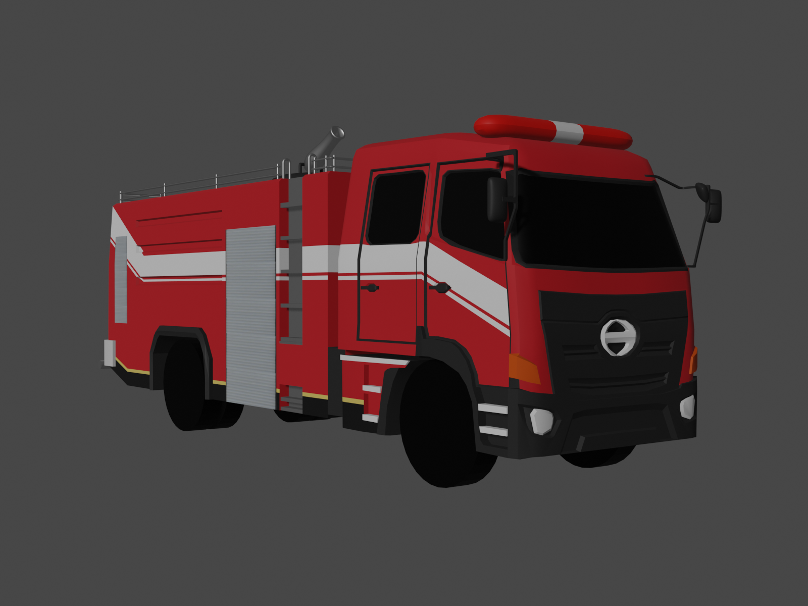
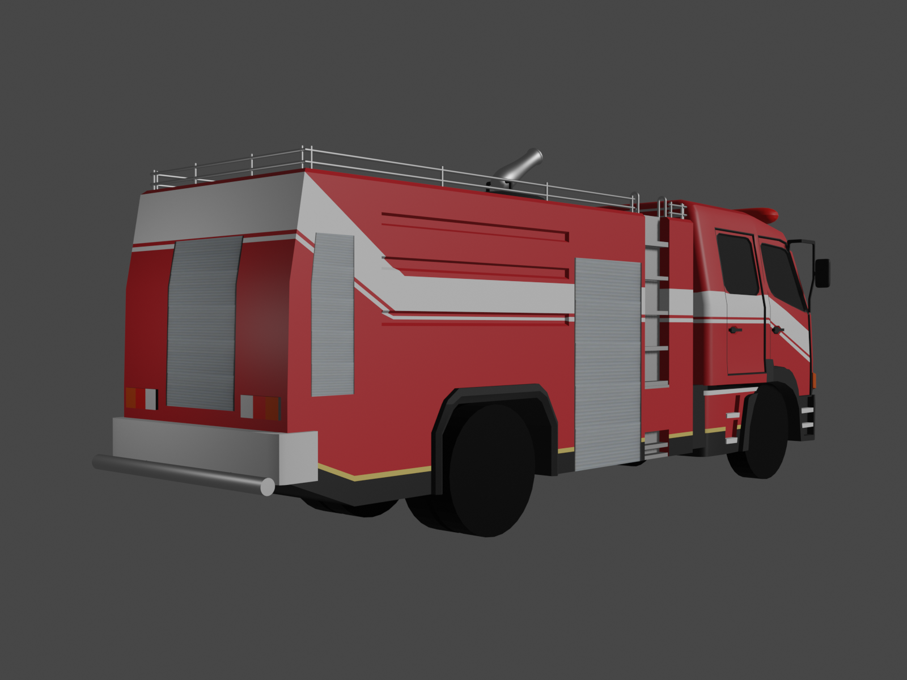

STORY OF THIS PROJECT
Awalnya ada klien yang ingin memesan jasa pembuatan model 3D truk pemadam kebakaran (damkar) untuk keperluan game di platform Roblox. Projek ini berfokus pada visualisasi detail mekanis dan fungsional agar tetap sesuai dengan estetika game namun menghasilkan model berkualitas tinggi.

Pemodelan dilakukan dari nol menggunakan software Blender, berpatokan pada referensi foto asli. Bagian-bagian seperti kepala truk, sirine, dan selang tekanan tinggi dibuat menyerupai bentuk aslinya.
TOOLS USED FOR THIS PROJECT
3D MODEL IN THIS PROJECT
Mari kita bangun sesuatu yang luar biasa bersama
Terbuka untuk kesempatan magang, project freelance atau kolaborasi riset.